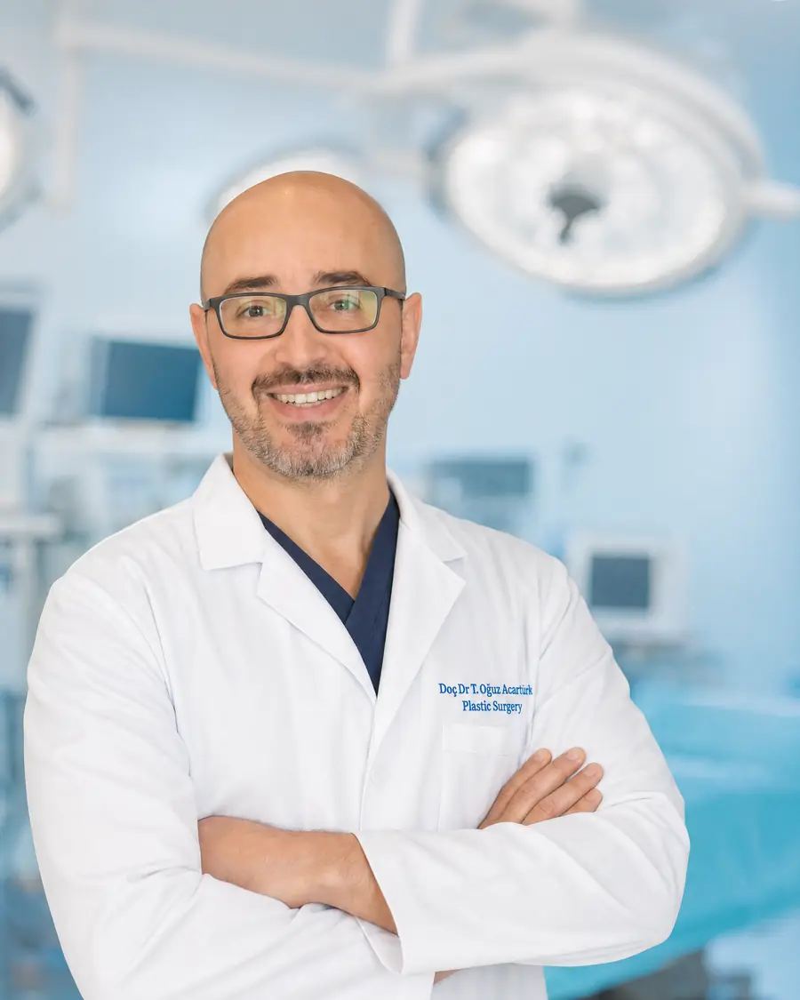

جراحة الترميم
جراحة الورم الليفي العصبي
الورم الليفي العصبي من النوع الأول (NF1) مرض وراثي تنشأ فيه أورام حميدة تُسمّى الأورام الليفية العصبية في الجلد وعلى امتداد الأعصاب. وعندما تسبب هذه الأورام ألمًا أو نزيفًا أو تقييدًا للوظيفة أو تغيّرًا واضحًا في المظهر، يمكن استئصالها جراحيًا وترميم المنطقة.
كتبه وراجعه طبيًا: Doç. Dr. Tahsin Oğuz Acartürk — الجراحة التجميلية والترميمية والتقويمية؛ جامعة بيتسبرغ. آخر تحديث:
ما هو الورم الليفي العصبي؟
الورم الليفي العصبي من النوع الأول مرض وراثي ينتج عن تغيّر في جين NF1، ويحدث في نحو ولادة واحدة من كل 3000 ولادة. ينتقل بنمط جسدي سائد: إذا كان أحد الوالدين مصابًا فإن احتمال انتقاله إلى الطفل 50 في المئة. لكن نحو نصف المرضى لا يوجد في عائلاتهم تاريخ للمرض.
أشهر علاماته بقع بلون القهوة بالحليب على الجلد، والنمش في الإبطين والمنطقة الإربية، والأورام الليفية العصبية. وهي أورام حميدة تنشأ من غمد العصب، ويزداد عددها عادةً منذ سن المراهقة.
توجد أشكال أخرى من الورم الليفي العصبي مثل النوع الثاني (NF2) والورام الشفاني. تتناول هذه الصفحة العلاج الجراحي للأورام الليفية العصبية في الجلد والأنسجة الرخوة في النوع الأول.
أنواع الأورام الليفية العصبية والنهج الجراحي
يُخطَّط للجراحة حسب نوع الورم وحجمه وموقعه.
| النوع | المظهر | النهج الجراحي |
|---|---|---|
| الورم الليفي العصبي الجلدي | نتوءات صغيرة طرية على الجلد أو داخله؛ قد تكون كثيرة | استئصال فردي أو على جلسات |
| الورم الليفي العصبي تحت الجلد | عقيدات صلبة تُجسّ تحت الجلد، مؤلمة أحيانًا | استئصال؛ يُخطَّط حسب علاقته بالعصب |
| الورم الليفي العصبي الضفيري | كتلة واسعة تمتد على طول عصب وتندمج في الأنسجة الرخوة | تصغير الكتلة والترميم |
لأن الأورام الضفيرية تندمج في الأنسجة المحيطة وتروى بغزارة، لا يكون استئصالها الكامل ممكنًا دائمًا. وفي هذه الحالة يكون الهدف تصغير الكتلة بأمان مع الحفاظ على الأعصاب والأوعية، وتحسين وظيفة المنطقة وشكلها.
متى تكون الجراحة ضرورية؟
ليس كل ورم ليفي عصبي بحاجة إلى استئصال. يُتخذ القرار بالاشتراك مع المريض بناءً على الشكاوى التي يسببها الورم وتوقعاته.
- أورام مؤلمة أو مسببة للحكة أو تتهيّج باحتكاك الملابس والحزام
- آفات تنزف أو تسبب جروحًا متكررة
- كتل تُسقط الجفن أو تقيّد حركة الفم أو المفصل
- عدم تناظر واضح أو تغيّر في مظهر الوجه أو الرقبة أو الجسم
- أورام متنامية تؤثر في الحياة اليومية والاجتماعية
النمو السريع، والألم الجديد المستمر، وتصلّب القوام، أو ضعف مستجد علامات تحذيرية مهمة. ولأن التحول الخبيث قد يحدث نادرًا في الأورام الضفيرية، يجب تقييم هذه العلامات دون تأخير بالتصوير وبالخزعة عند الحاجة.
كيف تُجرى العملية؟
- التقييميحدد الفحص والرنين المغناطيسي حدود الورم وعلاقته بالأعصاب والأوعية، وتُبنى خطة العملية على هذه المعلومات.
- الاستئصالتُستأصل الأورام الجلدية واحدًا تلو الآخر مع الاهتمام بالندبة؛ وعند كثرة الآفات تُخطَّط عدة جلسات. وفي الأورام الضفيرية تُصغَّر الكتلة مع الحفاظ على البنى المهمة.
- السيطرة على النزيفلأن هذه الأورام غنية بالأوعية الدموية، يُولى اهتمام خاص للسيطرة على النزيف أثناء العملية.
- الترميميُغلق الفراغ النسيجي الناتج مباشرةً أو يُرمَّم بسديلة موضعية أو بسديلة حرة بالجراحة المجهرية حسب المنطقة. وفي الوجه يمكن رفع البنى المترهلة مثل الجفن والحاجب والخد وإعادة تموضعها.
- المتابعةيُتابَع التئام الجرح وظهور آفات جديدة بمراجعات منتظمة.
الوجه ومنطقة الرأس والرقبة
قد تسبب الأورام الضفيرية في الوجه تدلّي الجفن وعدم تناظر الوجه وترهل الأنسجة الرخوة. والهدف هنا، إلى جانب تصغير الكتلة، الحفاظ على وظيفة العين والفم وتعابير الوجه واستعادة التناظر قدر الإمكان. وفي الحالات الواسعة قد يُخطَّط العلاج على أكثر من مرحلة.
ماذا يُتوقع بعد العملية؟
لا يعود الورم المستأصل عادةً في المكان نفسه. لكن لأن هذا المرض وراثي، قد تظهر أورام ليفية عصبية جديدة في أماكن أخرى من الجسم مع الوقت. لذلك يستمر العلاج غالبًا بتدخلات تُخطَّط عند الحاجة لا بعملية واحدة.
إذا تُرك جزء من الورم الضفيري، فقد ينمو النسيج المتبقي مجددًا مع الوقت. وفي بعض الأورام الضفيرية غير المناسبة للاستئصال الجراحي قد يُنظر أيضًا في العلاج الدوائي.
- تبقى ندبات رفيعة في أماكن الأورام الجلدية المستأصلة؛ والتخطيط للندبة جزء من العملية.
- بعد عمليات الأورام الضفيرية الواسعة قد يستغرق التعافي عدة أسابيع حسب المنطقة وطريقة الترميم.
- تتيح المراجعات المنتظمة اكتشاف الآفات الجديدة أو المتنامية مبكرًا.
تختلف نتائج أي إجراء جراحي أو تداخلي من شخص لآخر؛ وتُحدَّد خطة العلاج لكل مريض بناءً على نتائج الفحص والتصوير.
الأسئلة الشائعة
أي طبيب أراجع في إزمير لجراحة الورم الليفي العصبي؟
يدخل استئصال الأورام الليفية العصبية في الجلد والأنسجة الرخوة وترميم المنطقة ضمن جراحة التجميل والترميم. يجري الدكتور طحسين أوغوز أجارتورك في بايراكلي بإزمير العلاج الجراحي لهذه الأورام والترميم بالسدائل عند الحاجة.
هل تعود الأورام الليفية العصبية بعد الجراحة؟
لا يعود الورم المستأصل عادةً في المكان نفسه. لكن لأن المرض وراثي، قد تظهر أورام جديدة في مناطق أخرى مع الوقت. وفي الأورام الضفيرية قد ينمو النسيج المتبقي مجددًا.
هل يمكن استئصال أورام جلدية كثيرة جراحيًا؟
نعم. يمكن استئصال الأورام الجلدية المزعجة أو المؤثرة في المظهر واحدًا تلو الآخر. وإذا كانت كثيرة يُخطَّط الإجراء على جلسات تبدأ بالمناطق ذات الأولوية.
هل يمكن استئصال الورم الضفيري بالكامل؟
يمكن استئصال بعض الأورام الضفيرية الصغيرة محددة الحدود بالكامل. أما الكبيرة المندمجة في الأنسجة فالهدف تصغيرها دون الإضرار بالأعصاب والأوعية، وتحسين وظيفة المنطقة ومظهرها.
هل الورم الليفي العصبي وراثي؟
نعم. ينتقل النوع الأول بنمط جسدي سائد؛ إذا كان أحد الوالدين مصابًا فلكل طفل احتمال 50 في المئة. لكن المرض يظهر لأول مرة في العائلة لدى نحو نصف المرضى.
هل يمكن أن تتحول هذه الأورام إلى سرطان؟
الأورام الجلدية حميدة ولا تتحول إلى سرطان. أما في الأورام الضفيرية فقد يحدث التحول الخبيث نادرًا. وعند ملاحظة نمو سريع أو ألم مستمر أو تصلّب ينبغي إجراء تقييم.
المصادر
تستند المعلومات الطبية في هذه الصفحة إلى المصادر التالية.
Doç. Dr. Tahsin Oğuz Acartürk
الجراحة التجميلية والترميمية والتقويمية · جراحة الفم والوجه والفكين · جامعة بيتسبرغ

خبرته في هذا المجال: تتطلب جراحة الورم الليفي العصبي استئصالًا آمنًا لأورام غنية بالأوعية الدموية تمتد إلى الأنسجة المحيطة، ثم ترميم المنطقة وظيفيًا وجماليًا. شغل الدكتور أجارتورك منصب مدير ترميم الرأس والرقبة في جامعة بيتسبرغ، وأجرى أكثر من 600 عملية في الجراحة المجهرية والسدائل.
- المدير السابق لترميم الرأس والرقبة، جامعة بيتسبرغ
- أكثر من 600 عملية جراحة مجهرية وسدائل
- تخصص دقيق في جراحة الفم والوجه والفكين
تقييم الورم الليفي العصبي
اكتب أماكن الأورام، والشكوى الأكثر إزعاجًا لك، وأرسل تقرير الرنين المغناطيسي إن وُجد. إرفاق الصور يسهّل التقييم الأولي.